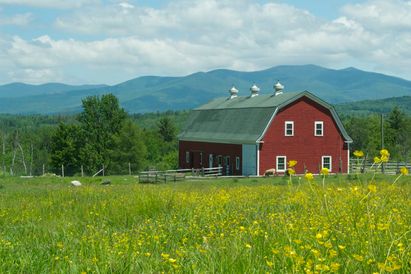

Smithard's Dog Co. Farms
Learn more about Smithard's Dog Co. Farms!

Smithard's is based in Sugar Grove, Virginia. Smithard's Farm and Smithard's Headquarters are located on the same 4,000 acres of property, with the Smithard's Factory down the road. Our crops, such as corn, carrots, celery, and tomotoes are cultivated on 1,500 acres of our land and our animals, including cattle, sheep, buffalo, and ox graze in the area. In addition, we have a river for our salmon and tuna. Our Litter Products are made out of wood from our timber forests and hosable titanium. Visits are available periodically from nine to five throughout the months of October to April. Call or Schedule a Tour before you visit.